模型微调
微调 AI 模型是一种常见做法，它允许您使用自定义数据集在配备 GPU 的计算环境中对预训练模型运行微调作业。Foundry Toolkit 当前支持在本地带 GPU 的机器上或云端（Azure 容器应用）带 GPU 的环境中微调 SLM。
微调后的模型可以下载到本地并使用 GPU 进行推理测试，或进行量化后在 CPU 上本地运行。微调后的模型也可以部署到云环境作为远程模型。
使用 Foundry Toolkit for VS Code 在 Azure 上微调 AI 模型（预览）
Foundry Toolkit for VS Code 现在支持预配 Azure 容器应用来运行模型微调并在云端托管推理终结点。
设置云环境
- 要在远程 Azure 容器应用环境中运行模型微调和推理，请确保您的订阅具有足够的 GPU 容量。提交支持工单以申请应用程序所需的容量。获取有关 GPU 容量的更多信息
- 如果您使用 HuggingFace 上的私有数据集或者您的基础模型需要访问控制，请确保您拥有 HuggingFace 账户并生成访问令牌。
- 如果您要微调 Mistral 或 Llama，请在 HuggingFace 上接受许可协议。
- 在 Foundry Toolkit for VS Code 中启用远程微调和推理功能标志
- 通过选择 文件 -> 首选项 -> 设置 打开 VS Code 设置。
- 导航到 扩展 并选择 Foundry Toolkit。
- 选择 "启用在 Azure 容器应用上运行微调和推理" 选项。
- 通过选择 文件 -> 首选项 -> 设置 打开 VS Code 设置。
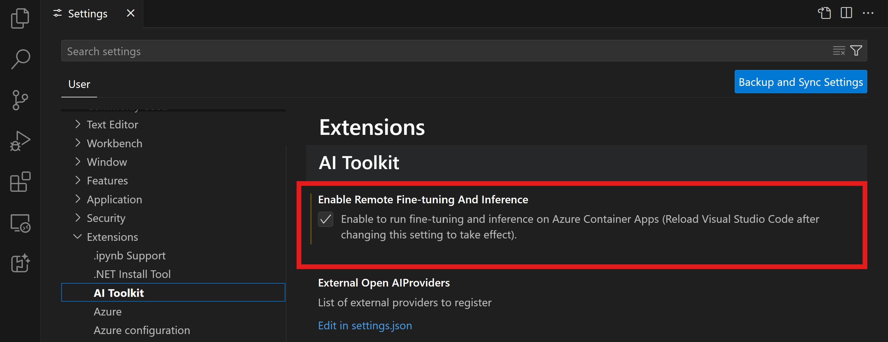
- 重新加载 VS Code 以使更改生效。
搭建微调项目
- 在命令面板 (
kb(workbench.action.showCommands)) 中运行Foundry Toolkit: Focus on Tools View - 导航到
Fine-tuning以访问模型目录。选择一个模型进行微调。为您的项目命名并选择其在您机器上的位置。然后，点击 "Configure Project" 按钮。
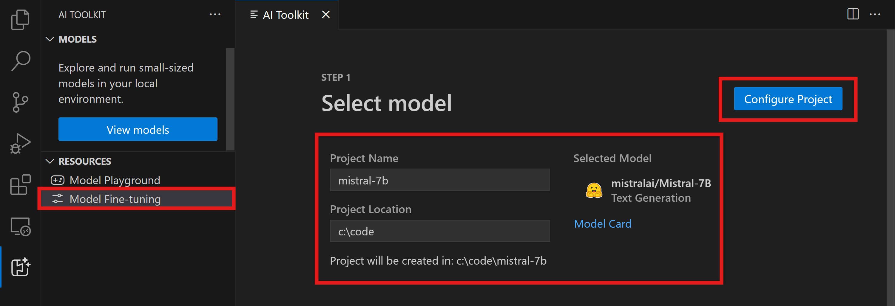
- 项目配置
- 避免启用 "Fine-tune locally" 选项。
- Olive 配置设置将以预设默认值显示。请根据需要调整并填写这些配置。
- 继续进入 Generate Project。此阶段利用 WSL，并涉及设置新的 Conda 环境，为未来包含 Dev Containers 的更新做好准备。
- 避免启用 "Fine-tune locally" 选项。
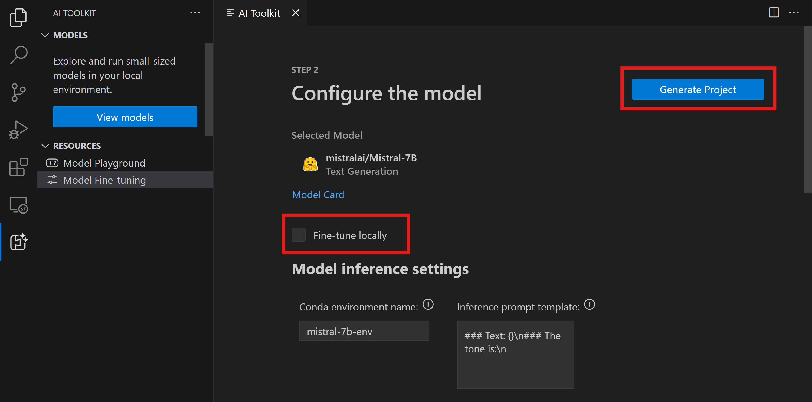
- 选择 "Relaunch Window In Workspace" 以打开您的微调项目。
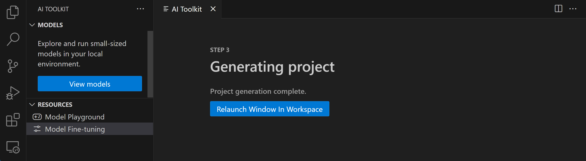
[!NOTE]
该项目目前在 Foundry Toolkit for VS Code 中可以在本地或远程运行。如果您在项目创建期间选择了 "Fine-tune locally"，它将仅在 WSL 中运行，不使用云资源。否则，该项目将被限制在远程 Azure 容器应用环境中运行。
预配 Azure 资源
要开始，您需要为远程微调预配 Azure 资源。从命令面板中找到并执行 Foundry Toolkit: Provision Azure Container Apps job for fine-tuning。在此过程中，系统会提示您选择 Azure 订阅和资源组。
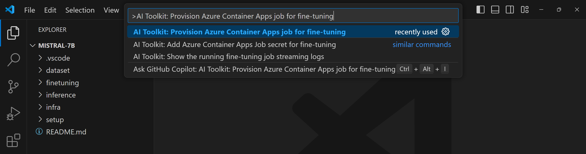
通过输出通道中显示的链接监控预配进度。
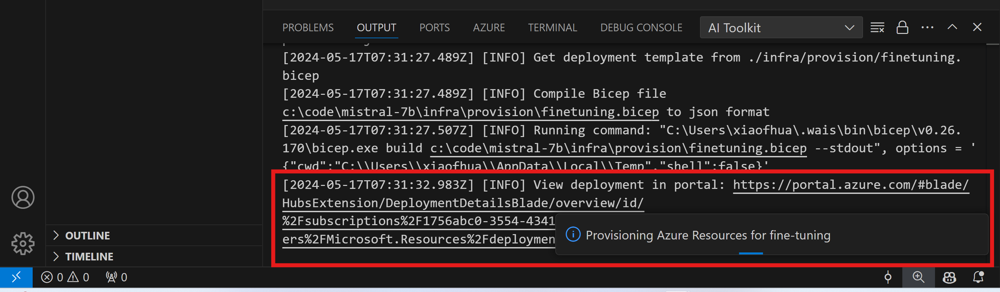
运行微调
要启动远程微调作业，请在命令面板中运行 Foundry Toolkit: Run fine-tuning 命令。
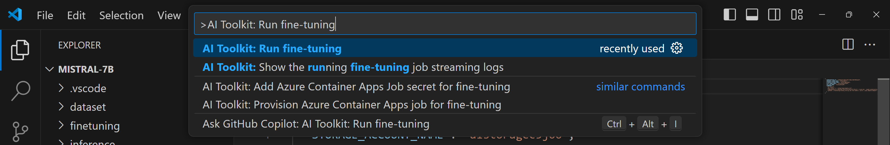
然后扩展将执行以下操作：
- 将您的工作区与 Azure 文件同步。
- 使用
./infra/fintuning.config.json中指定的命令触发 Azure 容器应用作业。
微调将使用 QLoRA，微调过程将为模型创建 LoRA 适配器，供推理时使用。
微调结果将存储在 Azure 文件中。
要浏览 Azure 文件共享中的输出文件，您可以使用输出面板中提供的链接导航到 Azure 门户。或者，您可以直接访问 Azure 门户，找到 ./infra/fintuning.config.json 中定义的名为 STORAGE_ACCOUNT_NAME 的存储账户，以及 ./infra/fintuning.config.json 中定义的名为 FILE_SHARE_NAME 的文件共享。
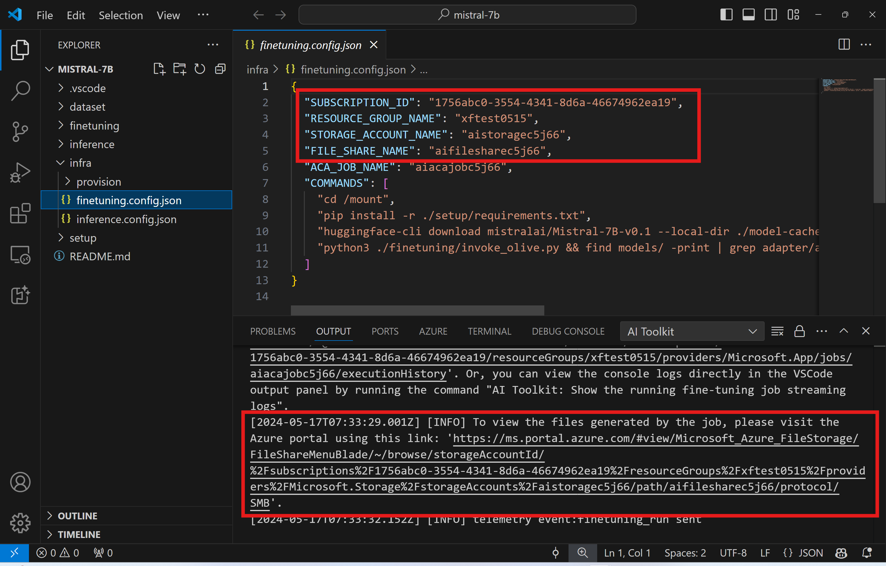
查看日志
一旦微调作业启动，您可以通过访问 Azure 门户 来访问系统日志和控制台日志。
或者，您可以直接在 VSCode 输出面板中查看控制台日志。
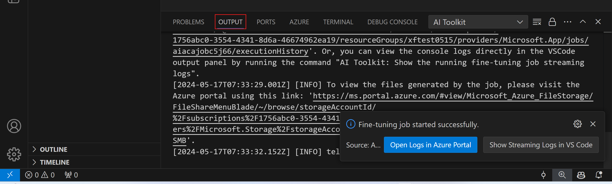
[!NOTE]
作业可能需要几分钟才能启动。如果已有正在运行的作业，当前作业可能会排队等待稍后启动。
在 Azure 上查看和查询日志
微调作业触发后，您可以通过选择 VSCode 通知中的 "Open Logs in Azure Portal" 按钮在 Azure 上查看日志。
或者，如果您已经打开了 Azure 门户，可以从 Azure 容器应用作业的 "Execution history" 面板中找到作业历史记录。
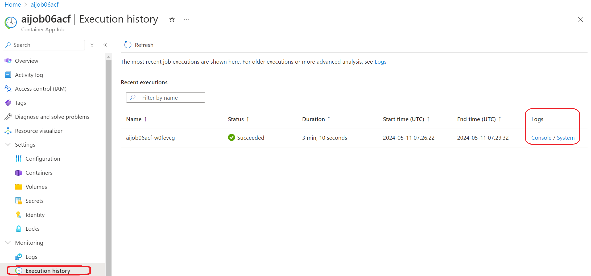
日志有两种类型，"Console" 和 "System"。
- 控制台日志是来自您的应用程序的消息，包括
stderr和stdout消息。这就是您在流式日志部分已经看到的内容。 - 系统日志是来自 Azure 容器应用服务的消息，包括服务级事件的状态。
要查看和查询您的日志，请选择 "Console" 按钮并导航到 Log Analytics 页面，您可以在其中查看所有日志并编写查询。
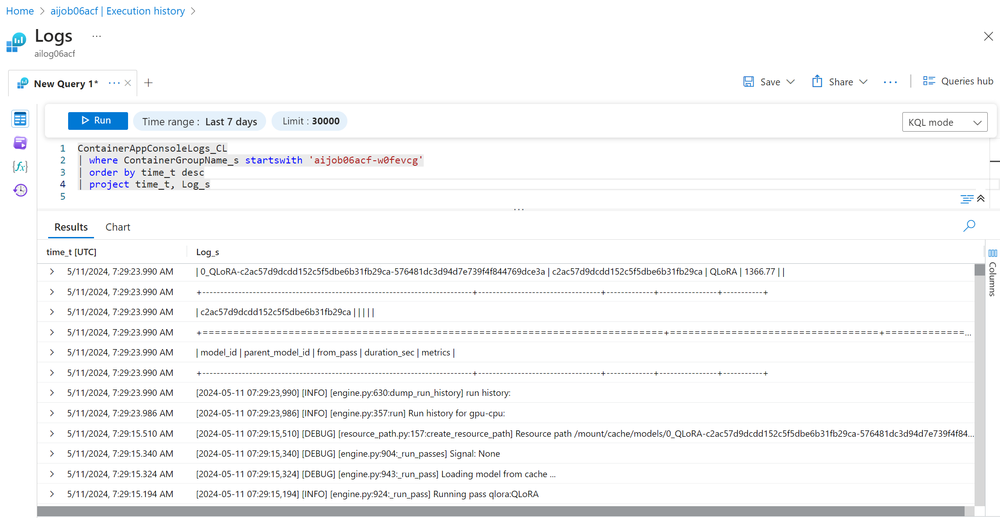
有关 Azure 容器应用日志的更多信息，请参阅 Azure 容器应用中的应用程序日志记录。
在 VSCode 中查看流式日志
启动微调作业后，您也可以通过选择 VSCode 通知中的 "Show Streaming Logs in VS Code" 按钮在 Azure 上查看日志。
或者您可以在命令面板中运行命令 Foundry Toolkit: Show the running fine-tuning job streaming logs。
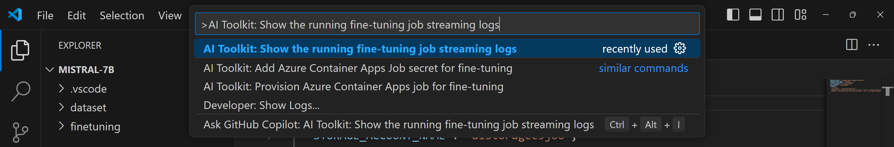
正在运行的微调作业的流式日志将显示在输出面板中。
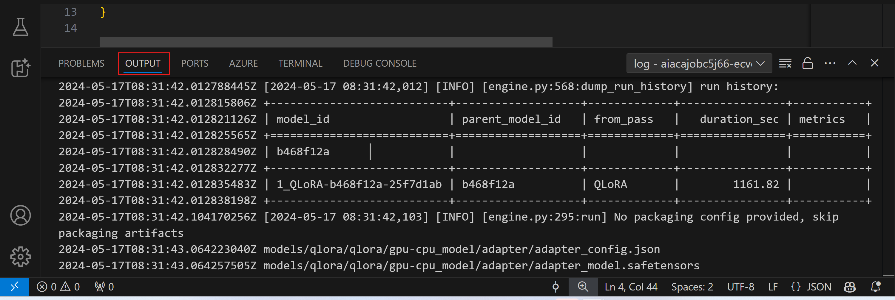
[!NOTE]
作业可能因资源不足而排队。如果日志未显示，请等待一段时间，然后再次执行命令重新连接到流式日志。
流式日志可能会超时并断开连接。但是，可以通过再次执行命令来重新连接。
使用微调后的模型进行推理
适配器在远程环境中训练完成后，使用一个简单的 Gradio 应用程序与模型交互。
预配 Azure 资源
与微调过程类似，您需要通过从命令面板执行 Foundry Toolkit: Provision Azure Container Apps for inference 来为远程推理设置 Azure 资源。在此设置过程中，系统会要求您选择 Azure 订阅和资源组。
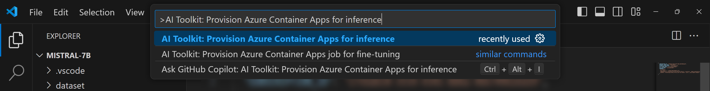
默认情况下，推理的订阅和资源组应与微调所用的一致。推理将使用相同的 Azure 容器应用环境，并访问存储在 Azure 文件中的模型和模型适配器，这些是在微调步骤中生成的。
部署用于推理
如果您希望修改推理代码或重新加载推理模型，请执行 Foundry Toolkit: Deploy for inference 命令。这将把您的最新代码与 ACA 同步并重启副本。
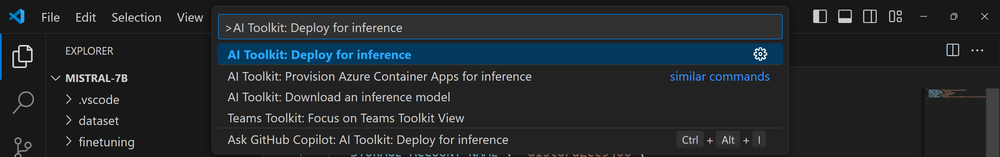
部署成功完成后，模型现在可以使用此终结点进行评估。
您可以通过选择 VSCode 通知中显示的 "Go to Inference Endpoint" 按钮来访问推理 API。或者，Web API 终结点可以在 ./infra/inference.config.json 中的 ACA_APP_ENDPOINT 下以及输出面板中找到。
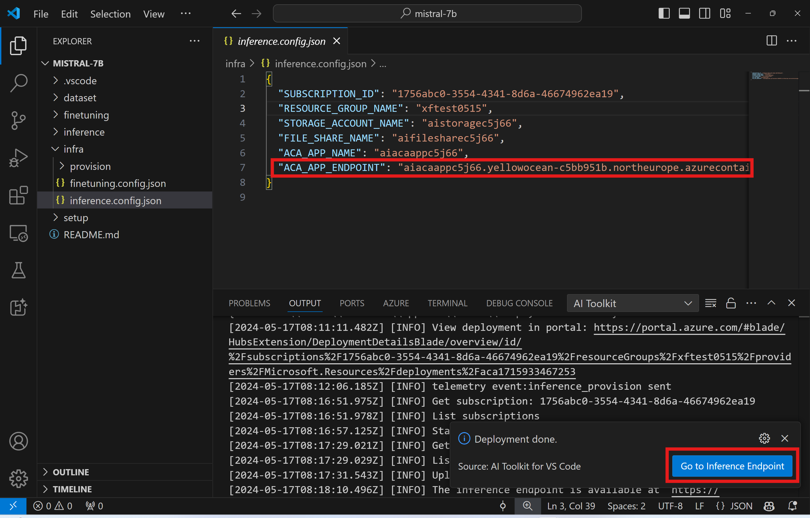
[!NOTE]
推理终结点可能需要几分钟才能完全运行。
高级用法
微调项目组件
| 文件夹 | 内容 | ||
|---|---|---|---|
| ------ | --------- | ||
infra | 包含远程操作所需的所有配置。 | ||
infra/provision/finetuning.parameters.json | 包含 bicep 模板的参数，用于预配 Azure 微调资源。 | ||
infra/provision/finetuning.bicep | 包含用于预配 Azure 微调资源的模板。 | ||
infra/finetuning.config.json | 由 Foundry Toolkit: Provision Azure Container Apps job for fine-tuning 命令生成的配置文件。用作其他远程命令面板的输入。 |
为 Azure 容器应用中的微调配置密钥
Azure 容器应用密钥提供了一种安全的方式来在 Azure 容器应用中存储和管理敏感数据，例如 HuggingFace 令牌和 Weights & Biases API 密钥。使用 Foundry Toolkit 的命令面板，您可以将密钥输入到预配的 Azure 容器应用作业中（存储在 ./finetuning.config.json 中）。这些密钥随后将作为环境变量在所有容器中设置。
步骤
- 在命令面板中，输入并选择
Foundry Toolkit: Add Azure Container Apps Job secret for fine-tuning
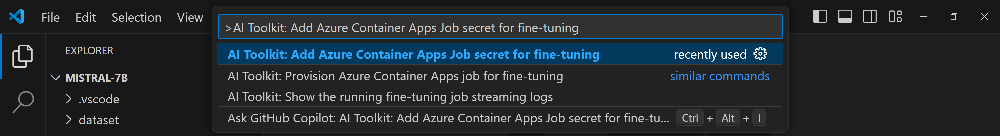
- 提供密钥名称和值
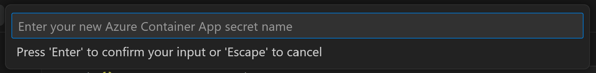
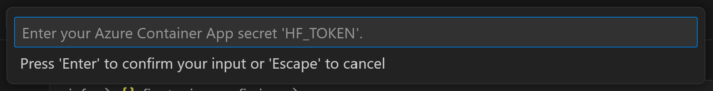
例如，如果您使用私有 HuggingFace 数据集或需要 Hugging Face 访问控制的模型，请将您的 HuggingFace 令牌设置为环境变量 HF_TOKEN，以避免在 Hugging Face Hub 上手动登录。
设置密钥后，您现在可以在 Azure 容器应用中使用它。该密钥将在容器应用的环境变量中设置。
配置用于微调的 Azure 资源预配
本指南将帮助您配置 Foundry Toolkit: Provision Azure Container Apps job for fine-tuning 命令。
您可以在 ./infra/provision/finetuning.parameters.json 文件中找到配置参数。详情如下：
| 参数 | 描述 | ||
|---|---|---|---|
| --------- | ------------ | ||
defaultCommands | 这是启动微调作业的默认命令。可以在 ./infra/finetuning.config.json 中覆盖。 | ||
maximumInstanceCount | 此参数设置 GPU 实例的最大容量。 | ||
timeout | 设置 Azure 容器应用微调作业的超时时间（秒）。默认值为 10800，即 3 小时。如果 Azure 容器应用作业达到此超时，微调过程将暂停。但是，检查点默认会保存，如果再次运行，微调过程可以从最后一个检查点恢复，而不是重新开始。 | ||
location | 这是预配 Azure 资源的位置。默认值与所选资源组的位置相同。 | ||
storageAccountName、fileShareName、acaEnvironmentName、acaEnvironmentStorageName、acaJobName、acaLogAnalyticsName | 这些参数用于命名要预配的 Azure 资源。您可以输入一个新的、未使用的资源名称来创建自定义命名的资源，或者如果您希望使用现有的 Azure 资源，也可以输入其名称。 |
使用现有的 Azure 资源
如果您有需要为微调配置的现有 Azure 资源，可以在 ./infra/provision/finetuning.parameters.json 文件中指定其名称，然后从命令面板运行 Foundry Toolkit: Provision Azure Container Apps job for fine-tuning。这将更新您指定的资源并创建任何缺失的资源。
例如，如果您有现有的 Azure 容器环境，您的 ./infra/finetuning.parameters.json 应如下所示：
{
"$schema": "https://schema.management.azure.com/schemas/2019-04-01/deploymentParameters.json#",
"contentVersion": "1.0.0.0",
"parameters": {
...
"acaEnvironmentName": {
"value": "<your-aca-env-name>"
},
"acaEnvironmentStorageName": {
"value": null
},
...
}
}手动预配
如果您希望手动设置 Azure 资源，可以使用 ./infra/provision 文件夹中提供的 bicep 文件。如果您已经设置并配置了所有 Azure 资源而没有使用 Foundry Toolkit 命令面板，您可以直接在 finetune.config.json 文件中输入资源名称。
例如：
{
"SUBSCRIPTION_ID": "<your-subscription-id>",
"RESOURCE_GROUP_NAME": "<your-resource-group-name>",
"STORAGE_ACCOUNT_NAME": "<your-storage-account-name>",
"FILE_SHARE_NAME": "<your-file-share-name>",
"ACA_JOB_NAME": "<your-aca-job-name>",
"COMMANDS": [
"cd /mount",
"pip install huggingface-hub==0.22.2",
"huggingface-cli download <your-model-name> --local-dir ./model-cache/<your-model-name> --local-dir-use-symlinks False",
"pip install -r ./setup/requirements.txt",
"python3 ./finetuning/invoke_olive.py && find models/ -print | grep adapter/adapter"
]
}模板中包含的推理组件
| 文件夹 | 内容 | ||
|---|---|---|---|
| ------ | --------- | ||
infra | 包含远程操作所需的所有配置。 | ||
infra/provision/inference.parameters.json | 包含 bicep 模板的参数，用于预配 Azure 推理资源。 | ||
infra/provision/inference.bicep | 包含用于预配 Azure 推理资源的模板。 | ||
infra/inference.config.json | 由 Foundry Toolkit: Provision Azure Container Apps for inference 命令生成的配置文件。用作其他远程命令面板的输入。 |
配置 Azure 资源预配
本指南将帮助您配置 Foundry Toolkit: Provision Azure Container Apps for inference 命令。
您可以在 ./infra/provision/inference.parameters.json 文件中找到配置参数。详情如下：
| 参数 | 描述 | ||
|---|---|---|---|
| --------- | ------------ | ||
defaultCommands | 这是启动 Web API 的命令。 | ||
maximumInstanceCount | 此参数设置 GPU 实例的最大容量。 | ||
location | 这是预配 Azure 资源的位置。默认值与所选资源组的位置相同。 | ||
storageAccountName、fileShareName、acaEnvironmentName、acaEnvironmentStorageName、acaAppName、acaLogAnalyticsName | 这些参数用于命名要预配的 Azure 资源。默认情况下，它们将与微调资源名称相同。您可以输入一个新的、未使用的资源名称来创建自定义命名的资源，或者如果您希望使用现有的 Azure 资源，也可以输入其名称。 |
使用现有的 Azure 资源
默认情况下，推理预配使用与微调相同的 Azure 容器应用环境、存储账户、Azure 文件共享和 Azure Log Analytics。会单独创建一个 Azure 容器应用，仅用于推理 API。
如果您在微调步骤中自定义了 Azure 资源，或者希望使用自己现有的 Azure 资源进行推理，请在 ./infra/inference.parameters.json 文件中指定其名称。然后从命令面板运行 Foundry Toolkit: Provision Azure Container Apps for inference 命令。这将更新任何指定的资源并创建任何缺失的资源。
例如，如果您有现有的 Azure 容器环境，您的 ./infra/finetuning.parameters.json 应如下所示：
{
"$schema": "https://schema.management.azure.com/schemas/2019-04-01/deploymentParameters.json#",
"contentVersion": "1.0.0.0",
"parameters": {
...
"acaEnvironmentName": {
"value": "<your-aca-env-name>"
},
"acaEnvironmentStorageName": {
"value": null
},
...
}
}手动预配
如果您希望手动配置 Azure 资源，可以使用 ./infra/provision 文件夹中提供的 bicep 文件。如果您已经设置并配置了所有 Azure 资源而没有使用 Foundry Toolkit 命令面板，您可以直接在 inference.config.json 文件中输入资源名称。
例如：
{
"SUBSCRIPTION_ID": "<your-subscription-id>",
"RESOURCE_GROUP_NAME": "<your-resource-group-name>",
"STORAGE_ACCOUNT_NAME": "<your-storage-account-name>",
"FILE_SHARE_NAME": "<your-file-share-name>",
"ACA_APP_NAME": "<your-aca-name>",
"ACA_APP_ENDPOINT": "<your-aca-endpoint>"
}您学到了什么
在本文中，您学习了如何：
- 设置 Foundry Toolkit for VS Code 以支持在 Azure 容器应用中进行微调和推理。
- 在 Foundry Toolkit for VS Code 中创建微调项目。
- 配置微调工作流，包括数据集选择和训练参数。
- 运行微调工作流，使预训练模型适应您的特定数据集。
- 查看微调过程的结果，包括指标和日志。
- 使用示例笔记本进行模型推理和测试。
- 导出并与他人共享微调项目。
- 使用不同的数据集或训练参数重新评估模型。
- 处理失败的作业并调整配置以重新运行。
- 了解支持的模型及其微调要求。
- 使用 Foundry Toolkit for VS Code 管理微调项目，包括预配 Azure 资源、运行微调作业以及部署模型进行推理。